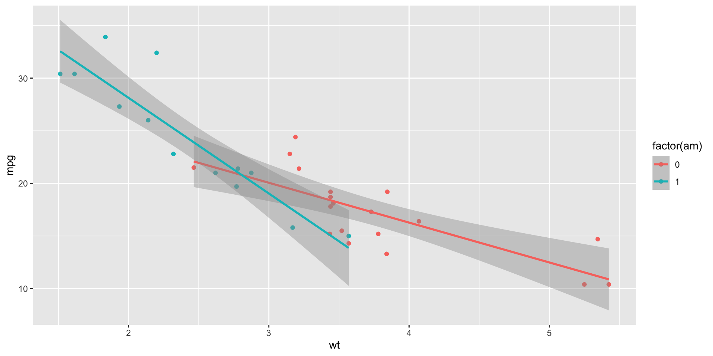
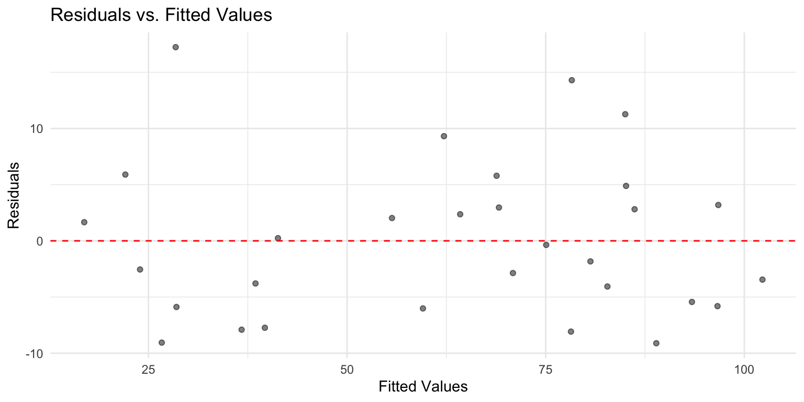

Multiple predictors, interpreting coefficients, and interaction effects.
Multiple regression means building a regression model (e.g., linear regression) with more than one predictor.
There are a few reasons to do this:
Fortunately, we can still use lm to build multiple regression models in R. To get started, let’s load the income dataset we used in previous lecutres.
[1] 30To add multiple predictors to our formula, simply use the + syntax.
Call:
lm(formula = Income ~ Seniority + Education, data = df_income)
Residuals:
Min 1Q Median 3Q Max
-9.113 -5.718 -1.095 3.134 17.235
Coefficients:
Estimate Std. Error t value Pr(>|t|)
(Intercept) -50.08564 5.99878 -8.349 5.85e-09 ***
Seniority 0.17286 0.02442 7.079 1.30e-07 ***
Education 5.89556 0.35703 16.513 1.23e-15 ***
---
Signif. codes: 0 '***' 0.001 '**' 0.01 '*' 0.05 '.' 0.1 ' ' 1
Residual standard error: 7.187 on 27 degrees of freedom
Multiple R-squared: 0.9341, Adjusted R-squared: 0.9292
F-statistic: 191.4 on 2 and 27 DF, p-value: < 2.2e-16💭 Check-in
Try building two models with each of those predictors on their own. Compare the coefficient values and \(R^2\). Any differences?
In general, we see that the coefficients are pretty similar from the single-variable models and the multiple-variable models, though generally reduced in the multiple-variable model.
# Model 1: Single predictor - Seniority only
mod_seniority <- lm(Income ~ Seniority, data = df_income)
# Model 2: Single predictor - Education only
mod_education <- lm(Income ~ Education, data = df_income)
# Model 3: Multiple regression - Both predictors
mod_multiple <- lm(Income ~ Seniority + Education, data = df_income)
mod_seniority$coefficientsWe also see that the model with multiple predictors achieves a better \(R^2\).
[1] 0.2686226[1] 0.8118069[1] 0.9341035💭 Check-in
Are there any potential concerns with using standard \(R^2\) here?
Adjusted \(R^2\) is a modified version of \(R^2\) that accounts for the fact that adding more variables will always slightly improve model fit.
\(R^2_{adj} = 1 - \frac{RSS/(n - p - 1)}{SS_Y/(n - 1)}\)
Where:
[1] 0.242502[1] 0.8050857[1] 0.9292223Note
As \(p\) increases, the numerator decreases, i.e., it’s a penalty for adding more predictors.
Akaike Information Criterion (or AIC) is another commonly used metric of model fit.
\(AIC = 2k - 2\ln(L)\)
Where:
Note
Unlike \(R^2\), a lower AIC is better. We’ll talk more about model likelihood later in the course!
mtcarsNow, let’s apply this using the mtcars dataset:
mpg from wt. Interpret the coefficients and model fit.mpg from am. Interpret the coefficients and model fit. Note that you might need to convert am into a factor first.mpg from both variables. Interpret the coefficients and model fit.It’s often helpful to practice writing out the linear equations for a fit lm. Let’s write out the equations for the multiple variable model above.
\(Y_{mpg} = 37.32 - 5.35X_{wt} - 0.02X_{am}\)
💭 Check-in
What about interactions between our terms?
An interaction effect occurs when the effect of one variable (\(X_1\)) depends on the value of another variable (\(X_2\)).
Any set of variables could interact (including more than two!), but it’s often easiest to interpret interactions with categorical variables.
Food x Condiment: The enjoyment of a Food (ice cream vs. hot dog) depends on the Condiment (Chocolate vs. Ketchup).Treatment x Gender: The effect of some treatment depends on the Gender of the recipient.Brain Region x Task: The activation in different Brain Regions depends on the Task (e.g., motor vs. visual).We can interpret the coefficients as follows:
am = 0) with wt = 0 have expected mpg of 31.wt: As wt increases, we expect automatic cars to decrease mpg by about 3.7.factor(am): Holding wt constant, manual cars have an expected mpg of about 14 more than automatic cars.wt correspond to even sharper declines in expected mpg.
Call:
lm(formula = mpg ~ am * wt, data = mtcars)
Residuals:
Min 1Q Median 3Q Max
-3.6004 -1.5446 -0.5325 0.9012 6.0909
Coefficients:
Estimate Std. Error t value Pr(>|t|)
(Intercept) 31.4161 3.0201 10.402 4.00e-11 ***
am 14.8784 4.2640 3.489 0.00162 **
wt -3.7859 0.7856 -4.819 4.55e-05 ***
am:wt -5.2984 1.4447 -3.667 0.00102 **
---
Signif. codes: 0 '***' 0.001 '**' 0.01 '*' 0.05 '.' 0.1 ' ' 1
Residual standard error: 2.591 on 28 degrees of freedom
Multiple R-squared: 0.833, Adjusted R-squared: 0.8151
F-statistic: 46.57 on 3 and 28 DF, p-value: 5.209e-11By default, R will draw different regression lines for each level of a categorical factor we’ve added an aes for.

Standard errors, heteroscedasticity, and multicollinearity.
The standard error of a coefficient measures the uncertainty in the estimated coefficient value.
When we inspect the output of a fit lm model, we can see not only the coefficients but the standard errors (Std. Error):
Call:
lm(formula = Income ~ Education, data = df_income)
Residuals:
Min 1Q Median 3Q Max
-19.568 -8.012 1.474 5.754 23.701
Coefficients:
Estimate Std. Error t value Pr(>|t|)
(Intercept) -41.9166 9.7689 -4.291 0.000192 ***
Education 6.3872 0.5812 10.990 1.15e-11 ***
---
Signif. codes: 0 '***' 0.001 '**' 0.01 '*' 0.05 '.' 0.1 ' ' 1
Residual standard error: 11.93 on 28 degrees of freedom
Multiple R-squared: 0.8118, Adjusted R-squared: 0.8051
F-statistic: 120.8 on 1 and 28 DF, p-value: 1.151e-11💭 Check-in
Does a larger SE correspond to more or less uncertainty about our estimate?
💭 Check-in
Which properties affect the standard deviation of that sampling distribution?
For a simple linear regression, the SE of the slope coefficient is:
\(SE(\beta_1) = \sqrt{\frac{\sum(y_i - \hat{y}_i)^2}{(n-2)\sum(x_i - \bar{x})^2}}\)
Note
You will not be expected to calculate this from scratch!
The t-statistic measures how many standard errors a coefficient is away from zero.
\(t = \frac{\hat{\beta} - 0}{SE(\hat{\beta})}\)
[1] 10.99015This matches the t value column in our summary output!
💭 Check-in
Looking at our mod_education output, is the Education coefficient significantly different from zero?
We can use the SE to construct confidence intervals around our coefficient estimates:
\(\hat{\beta} \pm t_{critical} \times SE(\hat{\beta})\)
2.5 % 97.5 %
(Intercept) -61.927397 -21.905827
Education 5.196685 7.577637Using your mtcars model from earlier predicting mpg from wt and am:
confint(model, level = 0.99).Heteroscedasticity occurs when the variance of residuals is not constant across all levels of the predictors.
💭 Check-in
Why would heteroscecasticity affect our interpretation of standard errors?
The standard error of the estimate gives us an estimate of how much prediction error to expect.
The key insight:
We can diagnose heteroscedasticity by plotting residuals vs. fitted values:
# Create diagnostic plot
tibble(
fitted = fitted(mod_multiple),
residuals = residuals(mod_multiple)
) %>%
ggplot(aes(x = fitted, y = residuals)) +
geom_point(alpha = 0.5) +
geom_hline(yintercept = 0, linetype = "dashed", color = "red") +
labs(title = "Residuals vs. Fitted Values",
x = "Fitted Values", y = "Residuals") +
theme_minimal()
Look for: funnel shapes, increasing/decreasing spread, or other patterns.
Several options to address heteroscedasticity:
We won’t be covering (2) or (3), but there are R packages for implementing both.
Multicollinearity occurs when predictor variables are highly correlated with each other.
When predictors are highly correlated, the model struggles to determine which predictor is “responsible” for variation in Y.
Consider predicting income from: - Years of education - Number of graduate degrees
Let’s check the correlation between our predictors:
The VIF quantifies how much the variance of a coefficient is inflated due to multicollinearity.
Seniority Education
1.039324 1.039324 VIF (Variance Inflation Factor) quantifies how much multicollinearity inflates the variance of a coefficient.
From the formula on the previous slide:
\(VIF_j = \frac{1}{1-R^2_j}\)
Where \(R^2_j\) is the R-squared from regressing predictor \(X_j\) on all other predictors.
Several strategies to address multicollinearity:
Note
The best solution depends on your research question and theoretical considerations!
Using the mtcars dataset:
mpg from wt, hp, and dispcor() and vif()CSS 211 | UC San Diego